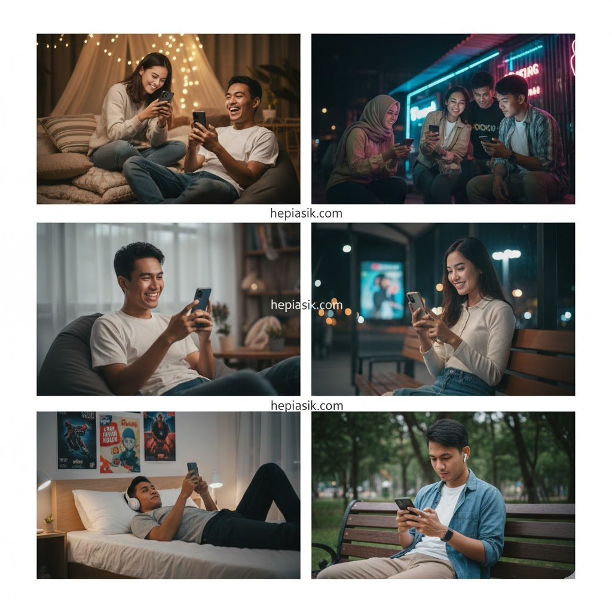
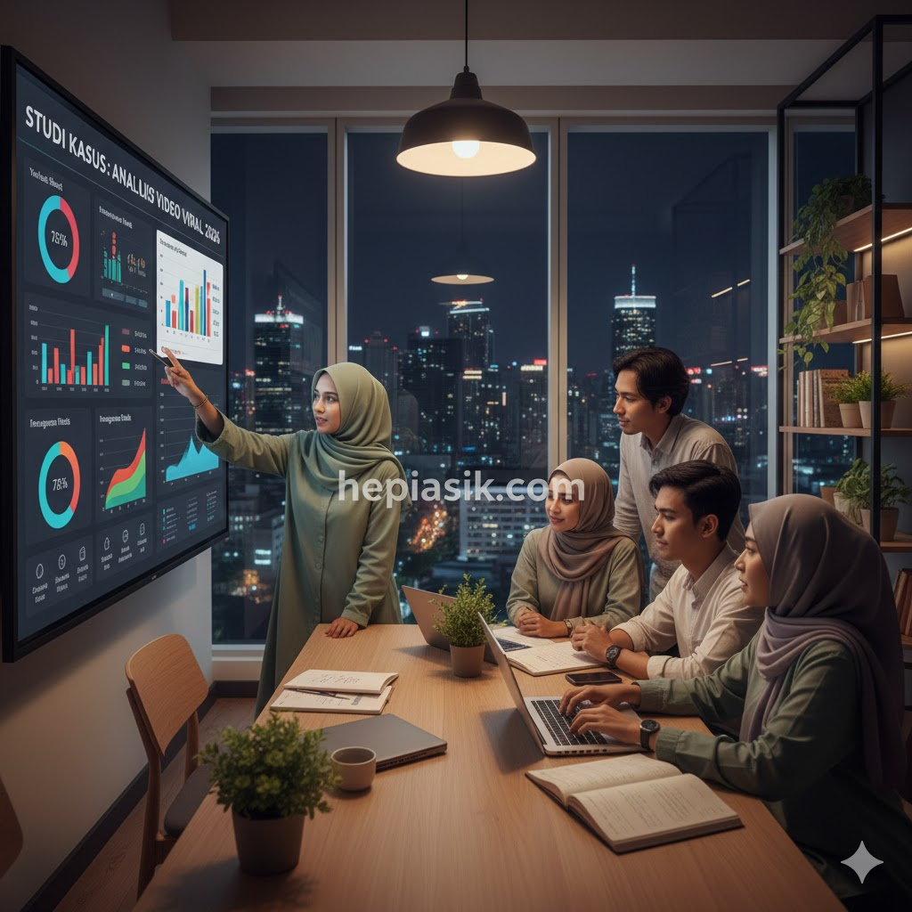

Kenapa Video Pendek Populer: Analisis Neurobiologi dan Tren Digital 2026
Fenomena dominasi video pendek di awal tahun 2026 bukan sekadar tren sesaat, melainkan refleksi dari perubahan mendasar dalam cara otak manusia memproses informasi digital. Dengan rata-rata durasi perhatian (*attention span*) manusia yang terus terkikis akibat saturasi informasi, format video di bawah 60 detik menjadi solusi efisien untuk kebutuhan konsumsi konten yang cepat. Alasan kenapa video pendek populer berakar pada mekanisme "micro-learning" dan pemuasan instan yang selaras dengan gaya hidup modern yang serba cepat dan menuntut mobilitas tinggi.
Bukan hanya soal durasi, popularitas format ini juga didorong oleh kemajuan infrastruktur jaringan 5G yang masif, memungkinkan pengalaman menonton tanpa jeda di mana pun. Riset menunjukkan bahwa konten visual diproses 60.000 kali lebih cepat oleh otak dibandingkan teks, menjadikan video pendek sebagai instrumen komunikasi paling persuasif saat ini (Cal Newport, Digital Minimalism, 2019). Keberhasilan format ini memaksa seluruh raksasa teknologi untuk merombak algoritma mereka demi memprioritaskan konten vertikal yang lebih intim dan *relatable* bagi audiens global.
Mekanisme Dopamin dan Adiksi Kognitif pada Konten Singkat
Secara neurobiologis, video pendek bekerja pada sirkuit penghargaan (*reward system*) otak dengan cara yang sangat efisien. Setiap kali kita melakukan *swipe* dan menemukan video baru yang menarik, otak melepaskan dopamin dalam jumlah kecil yang memicu rasa senang. Siklus ini menciptakan efek ketergantungan yang dikenal sebagai "variable reward schedule" (Anna Lembke, Dopamine Nation, 2021). Hal inilah yang menjelaskan kenapa video pendek populer secara universal; ia memberikan kepuasan instan tanpa membutuhkan usaha kognitif yang besar dari penontonnya.

Selain dopamin, format ini juga mengeksploitasi rasa ingin tahu manusia. Ketidakpastian tentang apa yang akan muncul pada *feed* berikutnya membuat penonton terus terjaga dan terhubung dalam waktu yang lama. Fenomena ini sering kali membuat waktu luang yang direncanakan hanya 5 menit menjadi satu jam tanpa disadari (James Clear, Atomic Habits, 2018). Oleh karena itu, popularitas video pendek merupakan hasil dari sinkronisasi sempurna antara desain teknologi dan kerentanan psikologis manusia terhadap hal-hal baru yang datang secara beruntun.
Insight penting: Video pendek adalah bentuk hiburan dengan hambatan masuk (*barrier to entry*) terendah. Solusinya bagi pengguna adalah meningkatkan kesadaran diri (*mindfulness*) dalam mengonsumsi konten agar tidak terjebak dalam adiksi digital yang tidak produktif.
Pergeseran Perilaku Konsumen: Dari Teks ke Narasi Visual
Data faktual dari berbagai lembaga riset media internasional pada tahun 2026 mengonfirmasi bahwa lebih dari 80% lalu lintas internet global didominasi oleh video. Generasi Z dan Alpha, sebagai penggerak utama pasar, lebih mempercayai ulasan produk dalam bentuk video 15 detik daripada artikel ulasan panjang (Philip Kotler, Marketing 5.0, 2021). Narasi visual dianggap lebih jujur dan sulit untuk dipalsukan, memberikan kesan autentisitas yang sangat dihargai di era manipulasi digital yang canggih.
Video pendek memungkinkan penyampaian emosi dan konteks yang tidak dapat dijangkau oleh kata-kata semata. Kecepatan informasi mengalir melalui ekspresi wajah, intonasi suara, dan latar belakang visual secara simultan (Daniel Goleman, Emotional Intelligence, 1995). Hal ini menciptakan kedekatan emosional antara kreator dan penonton, yang pada gilirannya meningkatkan loyalitas komunitas secara signifikan. Inilah alasan kenapa video pendek populer di kalangan *brand* besar sebagai alat pemasaran utama untuk menjangkau audiens muda secara efektif.
Kesimpulannya, visual adalah bahasa ibu bagi generasi digital. Solusinya bagi para kreator adalah fokus pada "storytelling" yang jujur dan langsung ke inti permasalahan tanpa basa-basi yang memperpanjang durasi secara tidak perlu.
Studi Kasus: Keberhasilan Algoritma Berbasis Minat 2026
Mari kita tinjau studi kasus pada platform berbagi video terkemuka di tahun 2026. Berbeda dengan model lama yang berbasis pada "siapa yang Anda ikuti", algoritma saat ini bekerja berdasarkan "apa yang sebenarnya Anda sukai secara mendalam". Melalui pengenalan pola tontonan bahkan hingga hitungan detik saat penonton berhenti, AI mampu menyusun *feed* yang sangat personal (Mihaly Csikszentmihalyi, Flow, 1990). Studi kasus ini menunjukkan bahwa pengguna menghabiskan waktu 40% lebih lama pada platform yang menggunakan sistem rekomendasi berbasis minat murni.

Keberhasilan ini membuktikan bahwa relevansi adalah kunci utama. Video pendek populer bukan karena durasinya saja, tetapi karena ia muncul di waktu yang tepat untuk orang yang tepat. Proses kurasi otomatis ini menghilangkan beban pilihan (*choice overload*) bagi pengguna, memberikan pengalaman santai yang sepenuhnya terpandu (Charles Duhigg, The Power of Habit, 2012). Dampaknya, retensi penonton tetap tinggi karena mereka selalu merasa mendapatkan konten yang bernilai bagi mereka secara pribadi.
Insight dari studi kasus: Algoritma adalah kurator pribadi Anda. Solusinya bagi pemilik bisnis adalah mengoptimasi kata kunci dan elemen visual dalam video agar mudah dikategorikan oleh mesin pencari bertenaga AI.
Ekonomi Perhatian: Kenapa Setiap Detik Begitu Berharga?
Dalam ekonomi perhatian, waktu adalah mata uang yang paling berharga. Video pendek menawarkan "return on investment" (ROI) waktu yang sangat tinggi bagi penonton. Dalam 60 detik, seseorang bisa mendapatkan resep masakan, tips karir, dan hiburan komedi secara bersamaan (Simon Sinek, Start with Why, 2009). Efisiensi ini sangat krusial bagi pekerja produktif yang hanya memiliki waktu luang singkat di sela-sela kesibukan profesional mereka.
Bagi pengiklan, video pendek memberikan peluang untuk masuk ke dalam sela-sela kehidupan audiens tanpa terasa invasif. Iklan yang dikemas dalam bentuk konten edukatif atau hiburan pendek memiliki tingkat konversi yang jauh lebih tinggi (Seth Godin, This is Marketing, 2018). Hal ini memperkuat alasan kenapa video pendek populer secara ekonomi; ia adalah medium yang paling efisien untuk memindahkan informasi dari satu pihak ke pihak lain dengan gesekan (*friction*) yang minimal.
Pahami bahwa dalam satu menit, Anda sedang memperebutkan perhatian di tengah jutaan konten lainnya. Solusinya, buatlah 3 detik pertama Anda begitu memikat sehingga penonton merasa rugi jika melakukan *swipe* ke atas.
Demokratisasi Kreativitas: Semua Orang Bisa Jadi Kreator
Salah satu alasan sosiologis kenapa video pendek populer adalah karena ia mendemokratisasi proses pembuatan konten. Dengan alat edit yang semakin canggih dan mudah digunakan langsung dari ponsel, hambatan teknis untuk menjadi kreator hampir hilang (Angela Duckworth, Grit, 2016). Semua orang kini memiliki panggung yang sama untuk menunjukkan bakat atau berbagi pemikiran tanpa memerlukan peralatan studio yang mahal.
Hal ini menciptakan keberagaman konten yang luar biasa. Penonton dapat menemukan perspektif dari berbagai belahan dunia, dari berbagai latar belakang profesi, hingga hobi yang sangat spesifik (Erich Fromm, The Art of Loving, 1956). Inklusivitas ini membuat video pendek terasa lebih manusiawi dibandingkan media arus utama yang sering kali terasa kaku dan seragam. Popularitasnya didorong oleh rasa kepemilikan kolektif atas konten yang diproduksi oleh "orang-orang biasa" untuk "orang-orang biasa".
Insight penting: Autentisitas mengalahkan kualitas produksi. Solusinya, jangan menunggu peralatan sempurna; mulailah dengan apa yang Anda miliki dan fokuslah pada nilai keunikan yang bisa Anda tawarkan kepada dunia.
Prediksi Masa Depan: Integrasi AI dan Video Imersif
Menjelang akhir 2026, tren video pendek diprediksi akan semakin menyatu dengan Augmented Reality (AR) untuk menciptakan pengalaman yang lebih imersif. Penonton tidak lagi hanya melihat layar, tetapi bisa berinteraksi dengan elemen di dalam video tersebut (Tony Schwartz, The Power of Full Engagement, 2003). Inovasi teknologi ini akan terus menjaga agar format video singkat tetap segar dan relevan di tengah persaingan platform yang semakin ketat.
Meskipun teknologi berubah, kebutuhan dasar manusia akan koneksi dan cerita tetaplah sama. Video pendek populer karena ia mampu membungkus kebutuhan purba tersebut dalam kemasan teknologi tercanggih masa kini (Alain de Botton, The Architecture of Happiness, 2006). Ke depannya, siapa pun yang mampu menggabungkan kecanggihan teknologi dengan kedalaman makna akan menguasai ekosistem digital ini. Video pendek adalah masa kini dan masa depan dari literasi digital global.
Teruslah beradaptasi dengan perubahan alat dan algoritma, namun jangan pernah melupakan inti dari komunikasi: kejujuran. Solusi pamungkas bagi keberlanjutan konten adalah membangun kredibilitas melalui informasi yang faktual dan bermanfaat bagi kehidupan audiens Anda.